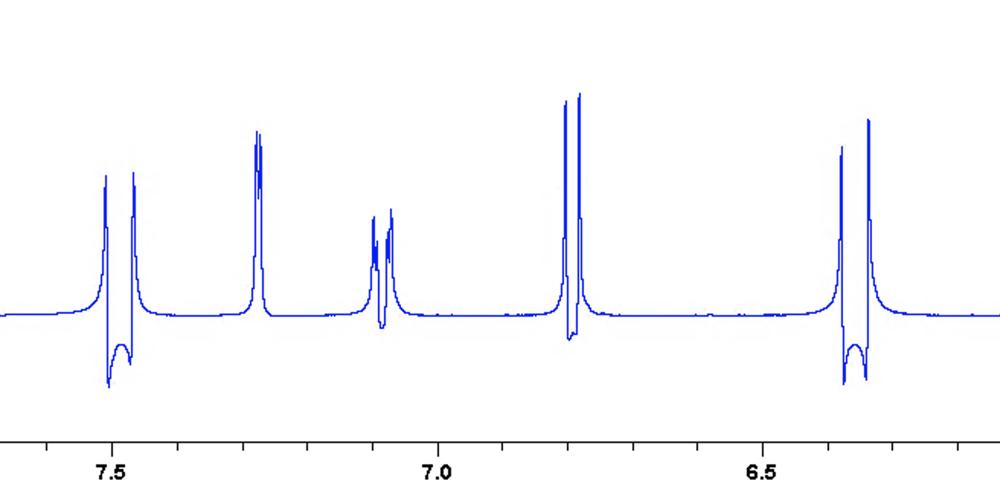

Here, we’ll introduce pulsed field gradients, which are ways of temporarily creating a magnetic field with a fixed amount of inhomogeneity.
These are ubiquitous in modern NMR experiments, where their main purpose is to select specific types of desired magnetisation and to reject (dephase) all other magnetisation. We will see how this works using a simple spin echo experiment.
(This is part 6 of a series of posts on pulse programming in TopSpin. For the other parts, see the table of contents here.)
The spin echo sequence
A spin echo refers to a 180° pulse bracketed by two delays of equal length; so, technically, the sequence depicted above consists of an excitation pulse followed by a spin echo sequence. By now, you might have enough knowledge to write a pulse programme for the above: I encourage you to have a go at it. The flip angle for the excitation pulse can be restricted to 90°.
Recall that p1 should always correspond to the 90° pulse width; and note that, by convention, p2 is used for the 180° pulse width. Since d1 is already taken for the recovery delay, we can use d2 for the spin echo delay denoted by \(\Delta\) above. That should define all the necessary variables for the pulse programme.
Here’s my version. One thing worth noting is that I explicitly specified that p2 is to be double of p1, using the line p2 = p1 * 2. This makes it clearer what p2 means and also makes sure that there is absolutely no possibility of getting it wrong.
; jy_spinecho
; excitation, then spin echo
; Jonathan Yong, 19 July 2021
#include <Avance.incl>
"p2 = p1 * 2"
ze
1 d1
(p1 ph1):f1
d2
(p2 ph1):f1
d2
go=1 ph31
wr #0
exit
ph1 = 0 2
ph31 = 0 2
;p1 : 90 degree pulse width (from getprosol)
;pl1 : hard pulse power (from getprosol)
;p2 : 180 degree pulse width
;d1 : recovery delay (ca. 1 s)
;d2 : spin echo delayType ased to get to the parameter screen. Set d2 to something short, on the order of 10 ms.
A note about units
Delays are specified in seconds, so if you want 10 ms, you need to enter 0.010, not 10. On the other hand, pulses are specified in microseconds, so if you want a 10 ms pulse you would need to enter 10000. Forgetting these units is an extremely common source of error!
To avoid this, in the ased screen and elsewhere in TopSpin, you can explicitly enter the units. When entering units, seconds are specified using s, milliseconds using m, and microseconds with u. Thus, instead of entering 0.010, you could also enter 10m. You should give this a try: notice how when you input 10m and press Enter, it automatically gets changed to 0.010.
This technique can be used for both delays and pulses. We haven’t yet come across any pulses that are longer than a few microseconds, but in the next post we will meet shaped pulses which are typically on the order of milliseconds.
Running the experiment
Run the experiment and process it. You should see some distorted multiplets like the following (if your sample doesn’t have any multiplets, you’d need to look for a more complicated sample).

(If you are familiar with product operators, you should quickly convince yourself as to why these multiplets are distorted—or in other words, not purely in phase.)
Adding gradients on either side
The job of the 180° pulse in the spin echo is to refocus chemical shift evolution. This is great as long as the 180° pulse is perfect: however, what happens if there are significant off-resonance effects (meaning that the edges of the spectrum aren’t refocused properly), or if the pulse is miscalibrated (meaning that it actually isn’t really a 180° flip angle)?
Adding some proper phase cycling can solve these issues, but that forces you to record more scans than you might need or want to. A more direct solution is to surround the 180° pulse with a pair of gradients which have equal magnitude, which refocus the desired coherence transfer pathway and dephase all others. (If you have read the requisite chapter of Keeler’s book, the desired pathway here is \(+1 \to -1\).)
Gradients are specified using the syntax pX:gpY, where pX is the duration of the gradient and gpY specifies both the shape1 as well as the amplitude of the gradient. A very important thing to note about gradients is that every gradient should be followed by a short delay, conventionally labelled d16, which allows for the dissipation of eddy currents. Thus, at every point in a sequence where a gradient is to be inserted, you need to add two lines: one pX:gpY for the actual gradient itself, and d16 immediately after that. An appropriate value of d16 would be somewhere around 200 µs.
For “standard” CTP-selection gradients, X is typically chosen to be 16. Let’s choose Y to be 1. Our pulse sequence should now become something like the following. (You don’t have to make a new sequence if you don’t want to; it’s OK to just overwrite the current one.) CTP gradient durations, i.e. p16 in our case, are often set to 1 ms, so set this value in the ased screen before moving on.
; jy_spinecho
; excitation, then spin echo, with gradients
; Jonathan Yong, 19 July 2021
#include <Avance.incl>
#include <Grad.incl>
"p2 = p1 * 2"
ze
1 d1
(p1 ph1):f1
d2
p16:gp1
d16
(p2 ph1):f1
d2
p16:dp1
d16
go=1 ph31
wr #0
exit
ph1 = 0 2
ph31 = 0 2
;p1 : 90 degree pulse width (from getprosol)
;pl1 : hard pulse power (from getprosol)
;p2 : 180 degree pulse width
;d1 : recovery delay (ca. 1 s)
;d2 : spin echo delay
;p16 : CTP gradient duration (1 ms)
;d16 : gradient recovery delay (ca. 200 us)
;gpz1 : 10% (CTP gradient)
;gpnam1: SMSQ10.100Parameter descriptions
As before, we might want to include some extra comments at the bottom of the pulse programme which are displayed in the ased screen. Each gradient gpZ actually has four parts to it: the name of the gradient gpnamZ, the \(x\)-amplitude gpxZ, the \(y\)-amplitude gpyZ, and the \(z\)-amplitude gpzZ. The name gpnamZ refers to a file, which in turn specifies the shape of the gradient; so gpnamZ can indirectly be thought of as the shape of the gradient. The three different amplitude components refer to the axis along which the field inhomogeneity is applied (conventionally, \(z\) refers to the vertical axis in the laboratory frame). These are specified in terms of percentages of the maximum permissible field gradient: thus, you should never exceed 100%!2
Many standard probes can only do \(z\)-gradients, which forces gpx and gpy to be both zero; thus, it is quite common to write comments for only the gpz and gpnam components.
In principle, you can put any text you like as the parameter description: after all, it’s just a comment. But practically speaking, there is a Python script bundled with TopSpin called gppp.py: this script reads the parameter descriptions from the pulse programme and sets the values of gpnam and gpz accordingly, which is quite convenient.3 In order for this script to work, you have to specify these in a particular format. The simplest possibility is to simply set the parameter description to the value that these parameters should take.
;gpz1 : 10%
;gpnam1: SMSQ10.100Alternatively, you can add some descriptive text behind the gpz values to tell the user what the role of the gradient is.
;gpz1 : 10% (CTP gradient)
;gpnam1: SMSQ10.100In any case, you should add these to your pulse programme if you haven’t already. Then, go to the ased screen, and type gppp into the TopSpin command line. The chosen values for gpz1 and gpnam1 should be automatically populated.
Run the spectrum; you should see that this is not very different from before. (In other words, the 180° pulse should have been pretty close to perfect.) However, with more complicated experiments, it is definitely possible to observe improvements in spectral quality.
If you want to see some immediate effect, then change one of the gp1’s in the pulse programme to gp1*-1 (either one; it doesn’t matter). That is, the line should read p16:gp1*-1. This multiplies the amplitude of the gradient by -1, i.e. causes the gradient pair to be opposing each other. Rerun the experiment, and you should find that all your signal is gone!
This is because of a mismatch between the CTP selection gradients and the actual pulse programme. A 180° pulse inverts the coherences, i.e. it generates a \(+1 \to -1\) CTP; but having opposing gradients selects for a CTP where the coherence on both sides is the same, such as \(+1 \to +1\). Of course, no detectable CTP can simultaneously obey both, so we end up detecting nothing at all.
Fixing the spin echo delay
If you have very keen eyes (or used multiple-display mode!), you might have noticed that when you added gradients in, the multiplets became slightly more distorted than before. The reason for this is because when you added in the gradients, the total spin echo delay is no longer just d2, but instead d2 + p16 + d16. This leads to a slightly longer period where J-coupling is allowed to evolve, and hence more distorted multiplets.
In order to fix this, what we should do is to create a new delay in place of d2: let’s say d3, which we would then set to be equal to d2 - p16 - d16. First, replace all the d2’s in the pulse programme with d3’s. Then, at the top of the pulse programme, add in a new relation:
"d3 = d2 - p16 - d16"Now, in the ased screen, the user can just specify d2, and the pulse programme will automatically calculate d3 such that the total spin echo delay is equal to d2. Indeed, you’ll find that in the ased screen TopSpin won’t actually allow you to input d3 yourself.
In this case, the spin echo delay is a pretty arbitrary number and you could argue that it doesn’t really matter whether an extra p16 + d16 is tacked on. However, in most pulse sequences, the total delay matters quite a bit: for example, it might have to be an exact multiple of \(1/J\) where \(J\) is some coupling of interest.
Gradient blanking
A final, small technical detail involves so-called gradient blanking, which refers to the isolation of the gradient-generating electronics from the rest of the probe. Without going into too much detail, it is generally a good idea to unblank the gradient system when you want to create gradients, and blank the system when you don’t.
These can be accomplished with, respectively, the UNBLKGRAD and BLKGRAD statements. However, these statements aren’t available by default. You might recall, at the very beginning, we mentioned how all pulse programmes must include the line #include <Avance.incl>. It turns out that to get these two gradient blanking commands, we need to also include the Grad.incl file; so you need to add a new line near the top of the pulse programme saying #include <Grad.incl>.
Where do we place them, then? UNBLKGRAD is the easy one: we should place that just before our first gradient. On the other hand, BLKGRAD should be put at some point in the pulse programme when we’re done with the gradients. In theory, this means just prior to acquiring the FID. However, on some systems this can cause some issues with the spectrometer lock mechanism. If the lock system isn’t stable during acquisition, this can cause peaks to “drift” in frequency, and it is sometimes possible to observe this as a shifted peak in the spectrum. So, I generally prefer to put BLKGRAD just before the recovery delay (which equates to just after the FID of the previous scan is acquired).
Both UNBLKGRAD and BLKGRAD need to be specified together with some delay. In this case, it’s quite convenient in that we can specify UNBLKGRAD together with the d3 delay, and we can specify BLKGRAD together with the d1 delay.
As a final note, we should also perform a final BLKGRAD at the end of the pulse sequence, just before the exit statement. This can’t be tacked onto an existing delay (there isn’t one in the right place), so we can create one specifically for it: but instead of writing something like d11 BLKGRAD and then specifying the value of d11, we can directly hard-code the delay duration by writing 50u BLKGRAD. (Recall that u in TopSpin corresponds to microseconds.)
The final pulse programme for this section should look like this:
; jy_spinecho
; excitation, then spin echo, with gradients
; Jonathan Yong, 19 July 2021
#include <Avance.incl>
#include <Grad.incl>
"p2 = p1 * 2"
"d3 = d2 - p16 - d16"
ze
1 d1 BLKGRAD
(p1 ph1):f1
d3 UNBLKGRAD
p16:gp1
d16
(p2 ph1):f1
d2
p16:dp1
d16
go=1 ph31
wr #0
50u BLKGRAD
exit
ph1 = 0 2
ph31 = 0 2
;p1 : 90 degree pulse width (from getprosol)
;pl1 : hard pulse power (from getprosol)
;p2 : 180 degree pulse width
;d1 : recovery delay (ca. 1 s)
;d2 : desired spin echo delay
;d3 : actual delay (after subtracting p16 and d16)
;p16 : CTP gradient duration (1 ms)
;d16 : gradient recovery delay (ca. 200 us)
;gpz1 : 10% (CTP gradient)
;gpnam1: SMSQ10.100If you made it all the way here, congratulations! This was a fairly long post. In the next post we’ll do a short exercise to consolidate everything we’ve learnt so far.
Footnotes
The shape basically specifies how fast the gradient is to be turned on and off. In practice we almost exclusively use smoothed gradients which “ramp up” at the beginning slowly from 0, and “ramp down” at the end.↩︎
What is the maximum permissible field gradient? You can type the
edprobecommand in TopSpin to find out. From the resulting box, select the probe you are currently using (consult someone if you’re not sure what you’re doing). Double-click on it: if it asks you for an admistration password, click Cancel. In the resulting list of parameters, you should notice the “maximum gradient strength in Z direction” in units of G/(cm A), and the “maximum permissible current in Z direction” in units of A. The maximum gradient strength in G/cm is then the product of these two quantities.↩︎To see what’s in this Python script, you can type
edpy gpppin the TopSpin command line.↩︎